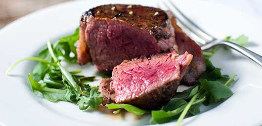
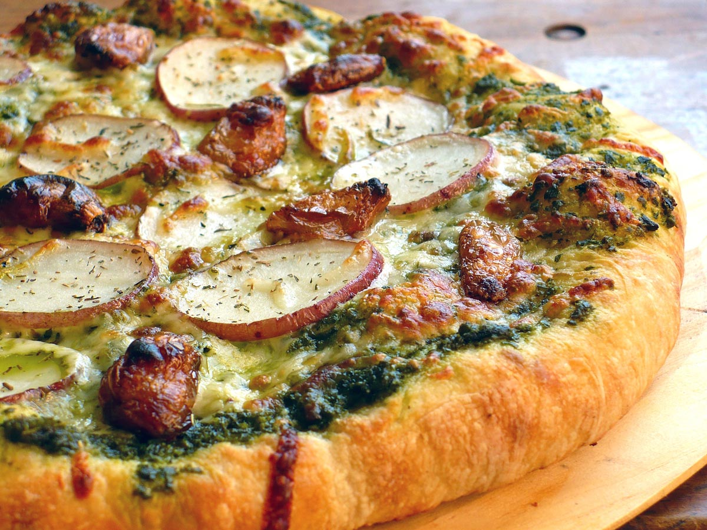

Yield: 1 Cup
Serving: 1
Prep Time:10m
Cool Time:10m
Ready Time:15m
Pots de Creme is a thick and rich pudding that’s baked and served chilled. This one uses earl gray tea in addition to chocolate to give it a more fragrant touch. I served it with a Cointreau ( an orange- flavored liqueur ) whipped cream>
Step 2
Preheat your oven to 325 Fahrenheit with a rack in the center. Heat cream in a pan over medium with the tea bags fully submerged until the cream is almost simmering. Try to keep them moving, so the tea can infuse the cream. Press and remove the tea bags before adding the chocolate and stirring until fully blended
Step 3
Mix your yolks with the sugar until smooth, then add your hot cream mixture gradually, whisking together. Set your ramekins or mugs onto a baking pan. Distribute the pudding evenly and then add hot water to the pan until it comes about halfway up the pudding dishes>
Bake for about 25 minutes, or until the top and edges set. Let cool and refrigerate for at least 2 hours before adding the whipped cream, any desired garnish and serving. This recipe makes about 6 ¾ cup ramekins or 3-4 mugs.
Recipe Type: Chocolate
Tags:chocolate, cointreau
Ingredients: butter, Cream, milk
Recent
Popular
Steaks in Garlic-Lime
(4.4 / 5)
Chocolate earl Grey Pots de Creme Recipe
(4.3 / 5)
Pesto Pizza With Roasted Garlic and Potato
(4.3 / 5)
Quis sed mid elit; risus alquet placerat, Pid et, vel phasellus augue…
More
Quis sed mid elit; risus alquet placerat, Pid et, vel phasellus augue…
More
If there's anything better than the perfect baked potato, it would have to be a twiced baked potato. I am sure everyone's…
Read More